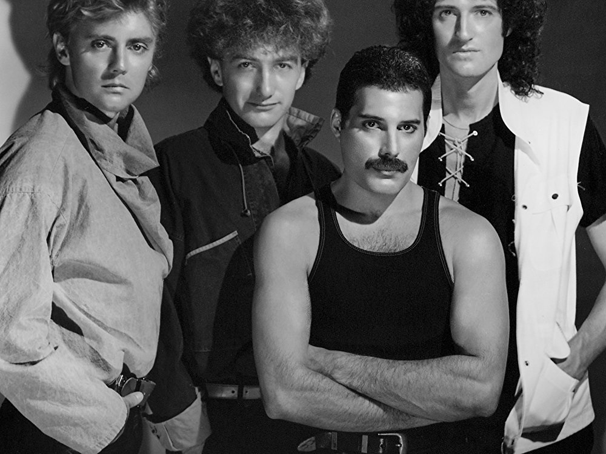

Queen

Queen — британская рок -
группа, добившаяся
широчайшей известности в середине
1970-х годов, и одна из наиболее
успешных групп в истории рок-
музыки. Средства массовой
информации называют группу
"культовой" и пишут, что она и по
сей день имеет сотни миллионов
поклонников. Группа выпустила
пятнадцать студийных альбомов,
пять концертных и многочисленные
сборники. Восемнадцать хитов "Queen" занимали первые места в чартах
разных стран.
После смерти вокалиста Queen Фредди Меркьюри группа практически
прекратила студийную деятельность, но Брайан Мэй и Роджер Тейлор
продолжили гастроли под названием Queen + Paul Rodgres, исполняя как
проверенные хиты, так и новый материал. С 2011 года состав выступает с
Адамом Лембертом под названием "Quenn + Adam Lembert".